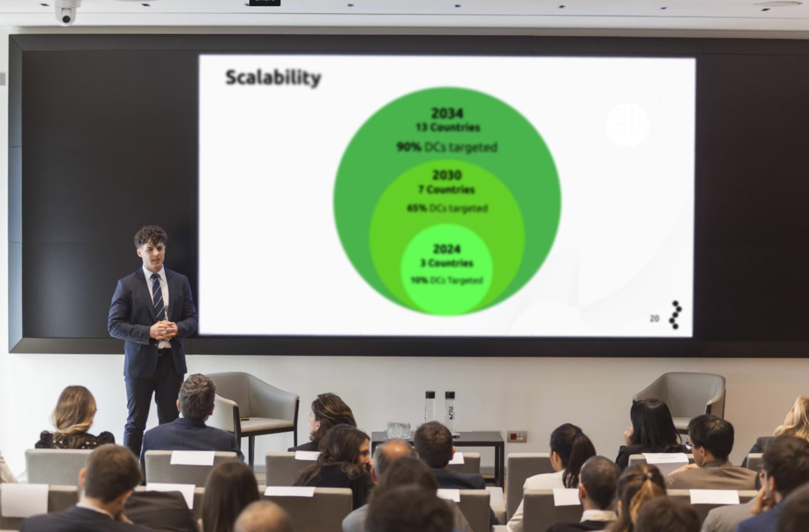
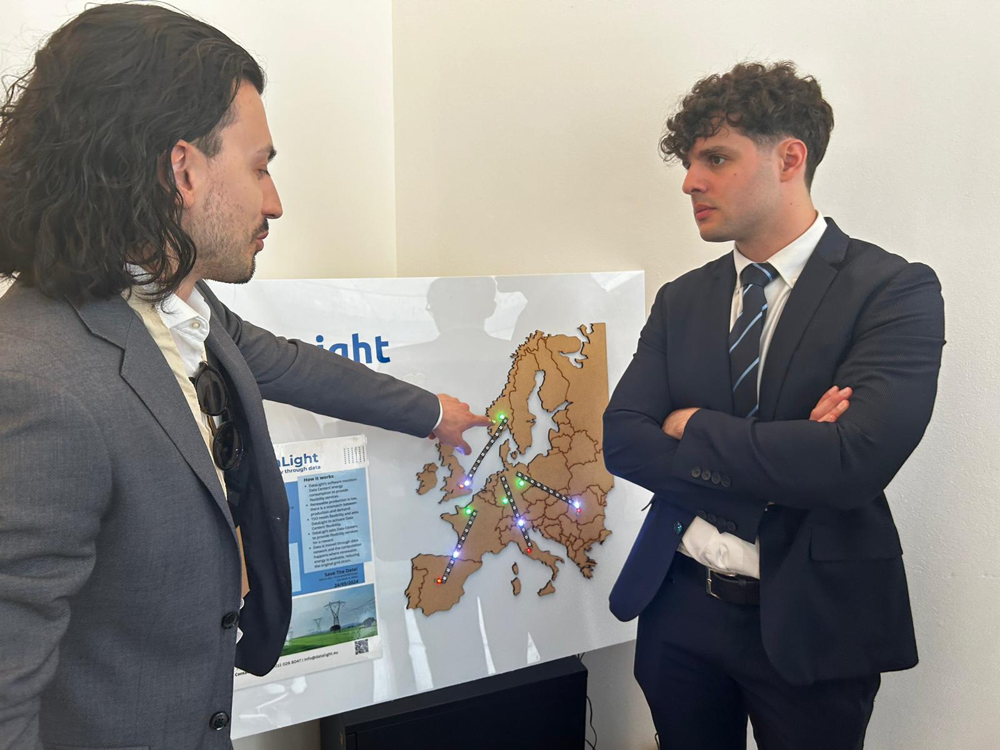

Presentation pitch.
Investor discussion during the Q&A session.
DataLight shifts data center computational loads in time and space to ease grid strain by aligning energy consumption with the availability of renewable energy.
By dynamically relocating computational tasks to regions where green energy is more accessible, DataLight optimizes energy use and supports grid resilience. This innovative approach to energy flexibility earned second place in the 2024 Innovation 4 Change "Energy Flexibility Challenge" by Schneider Electric.
Presentation pitch.
Investor discussion during the Q&A session.

"DataLight" team and Schneider Electric representative.